Outline
- Project Description
- Design
- Simulation
- Main Power Stage
- Control System and Soft Start
- PWM Generator and Gate Drive
- Input Filter Investigation
- Closed-Loop Response
- Prototyping
- Main Power Stage
- Control System and Soft Start
- PWM Generator and Gate Drive
- Open-Loop Response
- Closed-Loop Response
- Build
Project Description
The purpose of this project is to design and implement a high-efficiency boost converter. The converter will take a 9 V battery as the input and produce 24 V at the output. An efficiency above 90% is desired. Size, weight, and cost are only minimally considered in the design. The converter must provide power to a load that varies from around 1 to 2 W. This project also investigates the use of lower switching frequencies in converter applications. The switching frequency was fixed at 10 kHz. Another requirement is that the converter must remain in continuous conduction mode (CCM) during the entire operation, which means the main inductor must carry current at all times.
Design
The full converter design can be broken up into three separate categories. The main power stage consists of the design of the boost converter topology. The control system, which implements soft start functionality, is responsible for the closed-loop operation of the device. The PWM generator is needed to set the duty cycle of the gate driver.
Main Power Stage
Before diving into the schematic, it is important to understand the decisions made on the battery. It was desired to maximize the power output of the converter. Unfortunately, typical alkaline 9 V batteries can’t provide much current and power. The Energizer L522 Ultimate Lithium battery was used to get around this difficulty. This battery can output a continuous current of 1 A, which corresponds to a maximum power output of around 9 W. The battery has 600–800 mAh of capacity, depending on how much current is being drawn. At maximum current draw, the battery will be depleted in well under 1 hour. Based on all these observations, it was decided to use a 1–2 W variable load to balance the short life span and the desire to have higher output power. Under these assumptions, the battery has a lifetime of 3–4 hours at max load.
A schematic of the first iteration of the power stage design is shown in Figure 1. As is typical with a boost converter topology, the main diode D1, power transistor Q1, inductor L1, and output capacitor CL1 are the most important design decisions. In addition to these components, a low-dropout (LDO) regulator U1 is needed to provide 5 V to the various integrated circuits (ICs) used throughout the design. With all these components, power dissipation needs to be minimized.
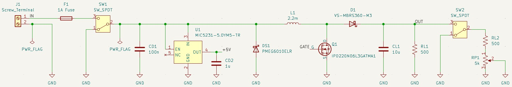
The input of the battery connects to the screw terminal J1. The hot terminal passes through a 1 A fuse F1 and connects to an SPDT switch SW1. The input power is also connected to the LDO with input capacitor CD1 and output capacitor CD2. The LDO of choice is the MIC5231-5.0YM5-TR due to its low quiescent power dissipation and 10 mA output current. Diode DS1 is included to provide a current path for the inductor during the finite switching time in SW1. The main output resistor RL1 used for testing is 500 Ω, which corresponds to an output power of 1.15 W. A series combination of a second 500 Ω load resistor RL2 and 5 kΩ variable resistor RP1 can be engaged through the switch SW2. This added functionality is implemented to test step responses and variable loads. With these resistances in place, the max load of the converter is 2.3 W.
The diode was the first of the main power components to be chosen since it has the most power dissipation of any device. The MBRS360 Schottky diode was chosen because of its small forward voltage drop. This device is expected to conduct a few hundred milliamps, which corresponds to voltage drops of around a few tenths of a volt. The transistor of choice was an IPD220N06L3GATMA1 MOSFET due to its low gate charge requirement of less than 10 nC and conduction resistance of around 20 mΩ. The small gate charge, along with the low switching frequency, leads to small losses.
The inductor and output capacitor were chosen together. A balance between inductor ripple current, capacitor ripple voltage, and frequency response of the system needs to be considered. Since the inductor current will be small, and the switching frequency is already small, the inductor needs to be very large to keep the converter in CCM. This is a major drawback of the low switching frequency. Nonetheless, a 2.2 mH power choke inductor was selected with around 0.34 Ω of DC resistance (DCR). A 10 μF capacitor was used at the output, resulting in an estimated peak-to-peak ripple of 0.3 V (1% of the output voltage).
Now that all major components have been selected, the transfer function of the output voltage with respect to the duty cycle can be determined. The Bode plots of the transfer function with a single 500 Ω load and both 500 Ω loads are shown in Figure 2. The resonant frequency is around 350 Hz in both cases. The quality factor of the resonance for the lighter load is 6, while the heavy load is around 4. The right-half plane zero caused by the boost topology is located at 3.7 kHz for the single load, and half this value at 1.85 kHz for the double load. Since both the resonant frequency and the zero are located at small frequencies, the bandwidth of the converter must be limited to achieve sufficient transient performance.
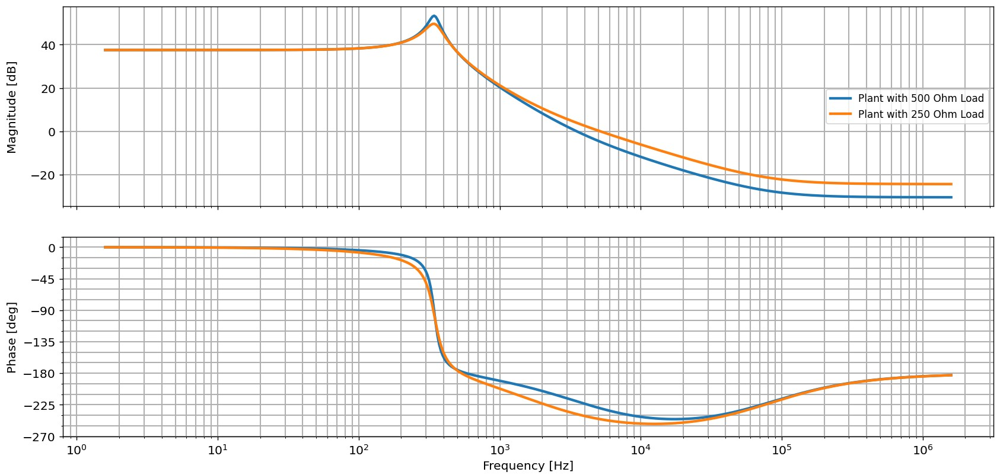
Control System and Soft Start
A schematic of the control system and soft start circuitry is shown in Figure 3. The AS348W5-7 single-supply CMOS op-amp U2 was used to implement a PID compensator. The output voltage is sensed through the voltage divider formed by resistors RD1, RP2, and RD2. Resistor RP2 is a variable resistor to tune the voltage seen by the compensator. Resistors RC1 and RC2 and capacitors CC1 and CC2 form the remainder of the compensator transfer function. The output of the op-amp feeds into one of the inputs of the PWM generator.
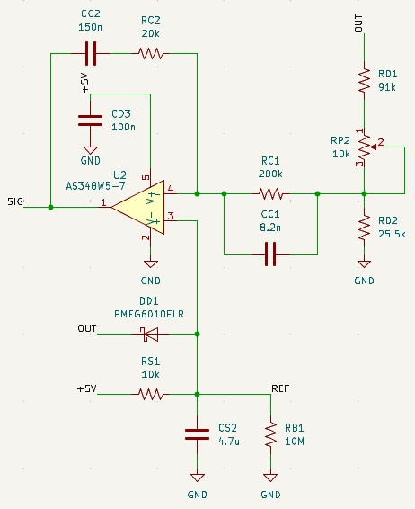
The soft start is implemented through the RC circuit formed by RS1 and CS2. The capacitor node REF acts as the reference to the noninverting terminal of the operational amplifier. Diode DD1 is used to quickly discharge the capacitor when the output voltage falls below 5 V. This feature is necessary to avoid excessive overshoot in the case that the output capacitor is fully discharged, but the soft start capacitor still has significant voltage. RB1 is used for bias currents of the op amp. Capacitor CD3 is used for decoupling of the IC.
The compensator was designed based on the loop gain of the converter. The loop gain transfer function consists of the cascade of the plant (Figure 2), the voltage divider, and the PWM transfer functions. The voltage divider and PWM transfer functions are constant gains. The transfer function of the compensator and the final loop gain for both load cases are shown in Figure 4.
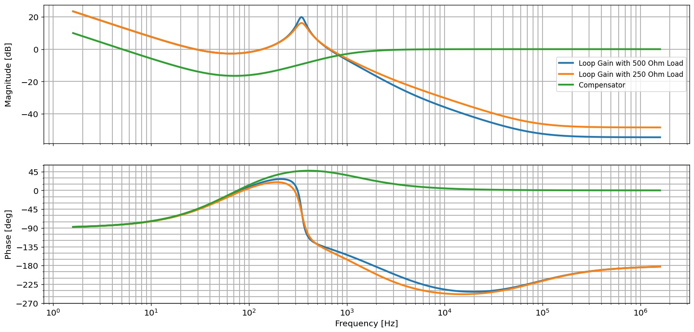
As can be seen, the compensator has an inverted zero at 50 Hz, a zero at 100 Hz, and a pole at 1 kHz. The gain between 50 Hz and 100 Hz was set to 0.1. The loop gain is large at low frequencies, which is desirable for control. The final unity crossover for both cases is around 650 Hz. This is a reasonable frequency to define bandwidth. The compensator adds a maximum phase of 45 degrees right before the final unity crossing. The phase margin for the lighter load is 40 degrees, and 35 degrees for the heavier load. Originally, the phase margin was designed much higher with a larger bandwidth, but ultimately, the small unity crossover was deemed more important in transient simulations. Lastly, the attenuation at the switching frequency is 36 dB for the lighter load and 30 dB for the heavier load.
PWM Generator and Gate Drive
A schematic of the PWM generator and gate driver section is shown in Figure 5. To generate a PWM signal for the gate driver, a 10 kHz sawtooth waveform needs to be generated. The waveform is created using a TLC555CDR timer U3 and LM334 current source U4. The timer is wired to operate as an astable oscillator. Resistor RT1 and potentiometer RP3 are used to set the reference to the current source (about 40 μA), which charges up the capacitor CT1. Once the capacitor charges to two-thirds of the input voltage of 5 V from the LDO, it discharges through the timer instantly. The capacitor immediately starts charging back up to 3.3 V (two-thirds of 5 V) and repeats.
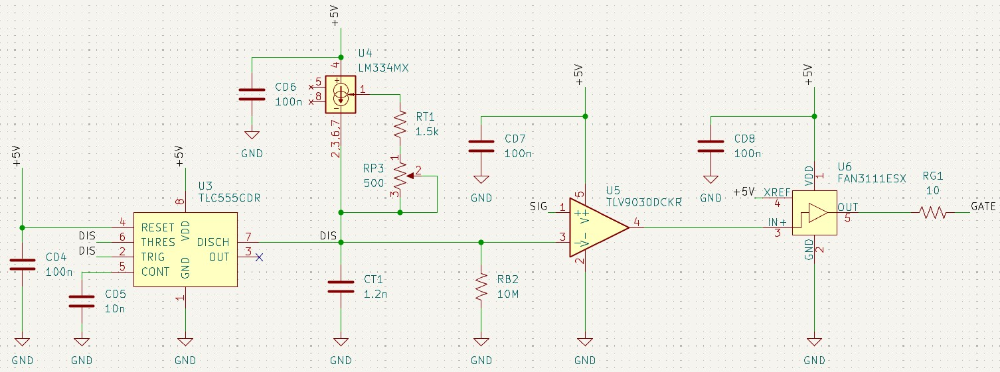
The capacitor node DIS is connected to the inverting terminal of a TLV9030DCKR analog comparator U5. The noninverting terminal is connected to the output of the control system. The large resistor RB2 handles bias currents of the comparator without interrupting the charging time of the capacitor. The output of the comparator is the PWM signal used for the input of the FAN3111ESX gate driver U6. The output of the gate driver connects through resistor RG1 to the MOSFET gate terminal. RG1 was chosen small enough to allow fast turn-on times of the MOSFET, while large enough to limit peak current. Capacitors CD4–CD8 are used for decoupling. The timer, comparator, and gate driver were chosen because they use CMOS technology to limit quiescent power consumption of the ICs.
A summary of all power losses from the final design operating at both load conditions is included in Table 1. The losses are ordered from most significant to least significant for the light load. Internal resistance of the battery is not included to isolate converter performance. Also, losses in the inductor core are difficult to predict and are not included. Both losses may be significant. An early estimate of efficiency is 96–97%
| Power Loss Source | Light Load | Heavy Load |
|---|---|---|
| Diode | 12 mW | 26 mW |
| Inductor DCR | 9 mW | 34 mW |
| Resistors | 5 mW | 5 mW |
| LDO Regulator | 4 mW | 4 mW |
| Gate Driver | 2 mW | 2 mW |
| MOSFET | 1 mW | 2 mW |
| Capacitor ESR | 1 mW | 4 mW |
| Current Source | 1 mW | 1 mW |
| 555 Timer | 1 mW | 1 mW |
| Comparator | 1 mW | 1 mW |
| Op-Amp | 1 mW | 1 mW |
| Total | 38 mW | 81 mW |
| Efficiency | 96.8% | 96.6% |
Simulation
The relevant portions of the schematics were converted to LTspice circuits used for simulating the various subsystems. The three sections outlined above were each simulated separately. A discussion of the input filter is discussed but is not implemented in the build. A final closed-loop analysis of all sections working together is given at the end.
Main Power Stage
The power stage is tested in two different ways, the first of which is the open-loop transient response that accurately represents operation. The second test involves a simulation of the averaged response, which excludes switching ripple. The benefit of the averaged model is that additional simulations can be done with this model, such as small-signal AC analysis and operating point analysis. A circuit of the LTspice switching model and the averaged model are included in Figures 6 and 7, respectively. The input voltage was set to 8 V because the battery will operate close to this value for the majority of its lifetime.
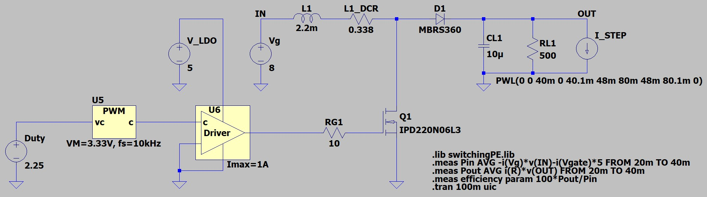
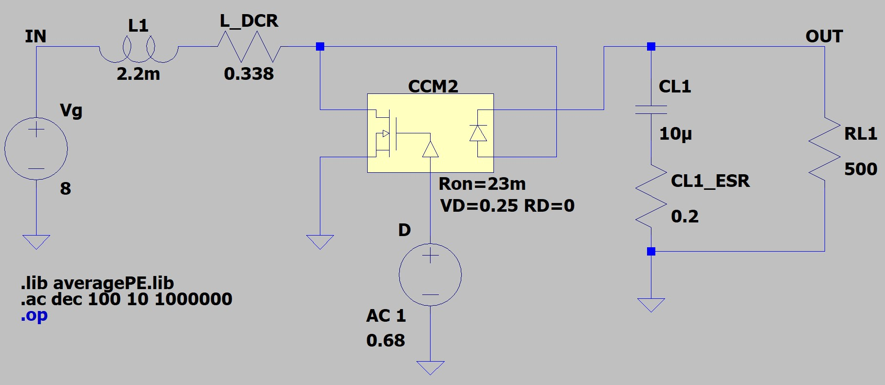
The switching model includes most of the power stage along with a model of the gate driver and the PWM input. The duty cycle of the PWM is set manually to 68%. A current source is implemented to act as a step response when the second load resistor engages and disengages. A transient response illustrating the initial startup cycle and the step responses is shown in Figure 8. The initial overshoot is 75% (42 V), which must be controlled in the final closed-loop simulation. The step responses exhibit moderate overshoot and severe oscillations. An estimate of the efficiency, including only losses in the diode, MOSFET, inductor DCR, and power dissipation in the driver, is given in the log. The efficiency was calculated to be 97.8%.
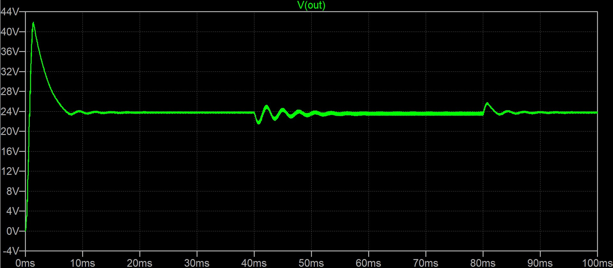
The averaged circuit model was used to verify the DC voltages and currents, as well as to validate the plant transfer function through AC analysis. The principle behind the averaged model is that the equations governing the operation of the diode and MOSFET are averaged and encapsulated in the CCM2 block, which also captures the MOSFET on-resistance and diode forward voltage drop. Capacitor equivalent series resistance (ESR) is also included in the model. The transfer function of the output voltage with respect to duty cycle for the light load is shown in Figure 9. The results closely matched the analytical results in Figure 2.
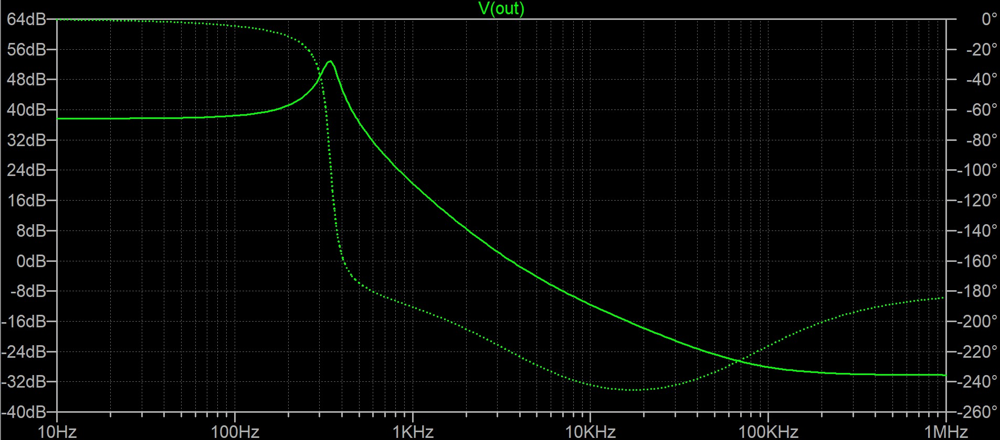
Control System and Soft Start
An isolated version of the control system circuit that was used for simulation is shown in Figure 10. An AC source was used at the input. The resulting transfer function of the compensator is shown in Figure 11. The scaling factor seen at the top of the plot is to remove the effect of the voltage divider and the inversion caused by the inverting configuration of the op-amp. The results closely match those in Figure 4. There is an extra pole located at around 500 kHz that is caused by the pole of the op-amp. Since this pole is at a higher frequency relative to the normal operation of the converter, it does not cause any issues.
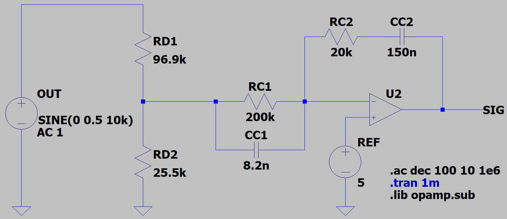
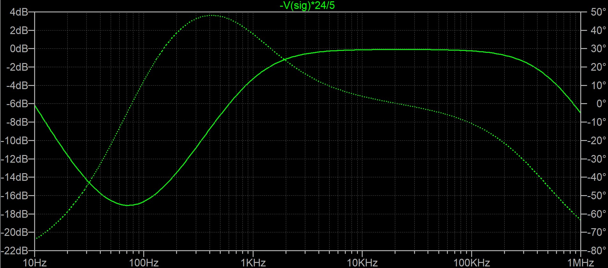
The soft start was also tested, but the results are trivial. The RC time constant of the circuitry is 47 ms, which means it takes about 200 ms for the reference signal to reach 5 V. This delay is long enough to prevent any overshoot due to large amplifier errors, as will become more apparent in the closed-loop simulation.
PWM Generator and Gate Drive
The LTspice model used to test the PWM generator is shown in Figure 12. A current source is used to replace U4 in the schematic. The reference source entering the noninverting terminal of the comparator simulates the output of the compensator. The sawtooth waveform and the duty cycle waveforms are shown in Figure 13. The green curve shows two different duty corresponding to two different input reference levels. The sawtooth waveform is slightly slower than 10 kHz due to the 10 MΩ resistor influencing the charging time. The current source can be tuned with RP3 to increase the current, so the resistor is of no concern.
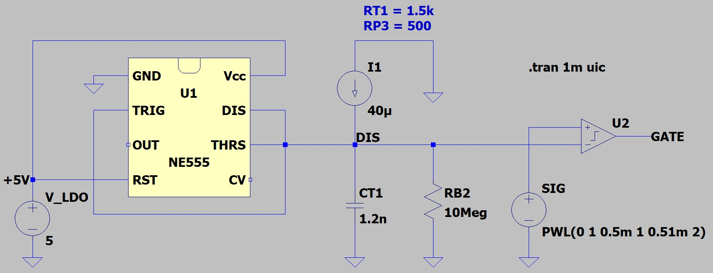
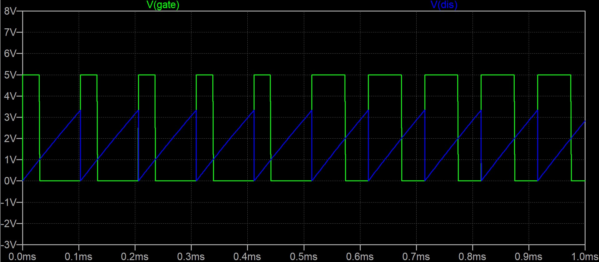
Input Filter Investigation
Converters are known to generate large amounts of electromagnetic interference (EMI) caused by the input current waveform. Figure 14 shows a zoomed-in view of the current waveform from the circuit in Figure 6. The input supply is a 10 kHz triangular wave with an amplitude of a few hundred milliamps. The current oscillations can add EMI from the input power source.
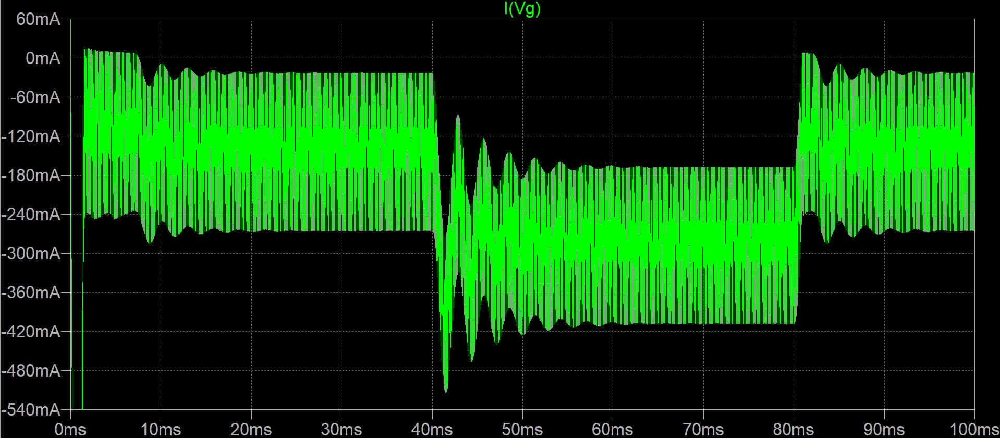
The goal of the input filter design was to achieve as much attenuation as possible while not affecting the loop gain and choosing all inductors under 100 μH and all capacitors under 100 μF. A two-stage filter was then designed using the Extra Element Theorem (EET). The filter added to the open-loop model is shown in Figure 15. Each stage incorporates an LC filter with damping. The damping is responsible for ensuring that the poles of the filter don’t interfere with the loop gain and output impedance of the converter. The inductor DCR for both filter inductors was assumed to be 0.5 Ω. The attenuation at the switching frequency was maximized to 35 dB. Figure 16 shows the input current with the attenuation as compared to Figure 14.
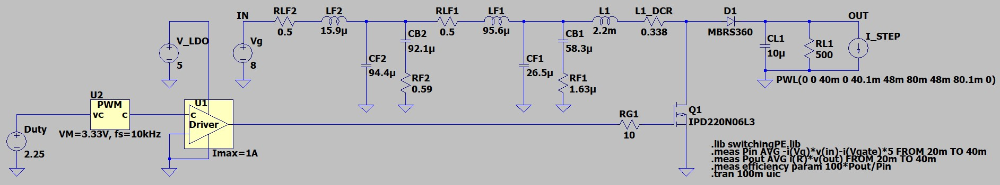
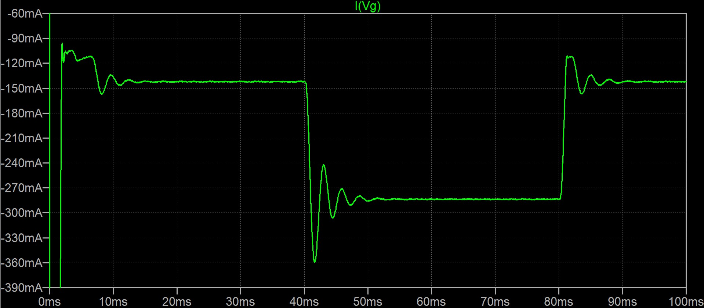
The loop gain and output impedance were recalculated and plotted for the lighter load in Figures 17 and 18, respectively, for the light load case. The red curves are without an input filter, and the green curves are with the filter. As can be seen, there are minimal changes in both plots, meaning the filter does not impact the small-signal characteristics of the boost converter.
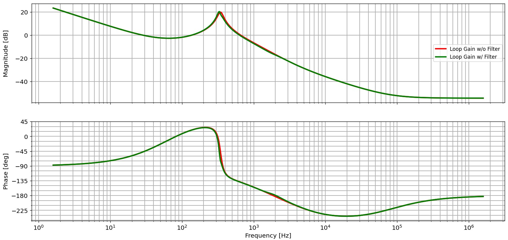
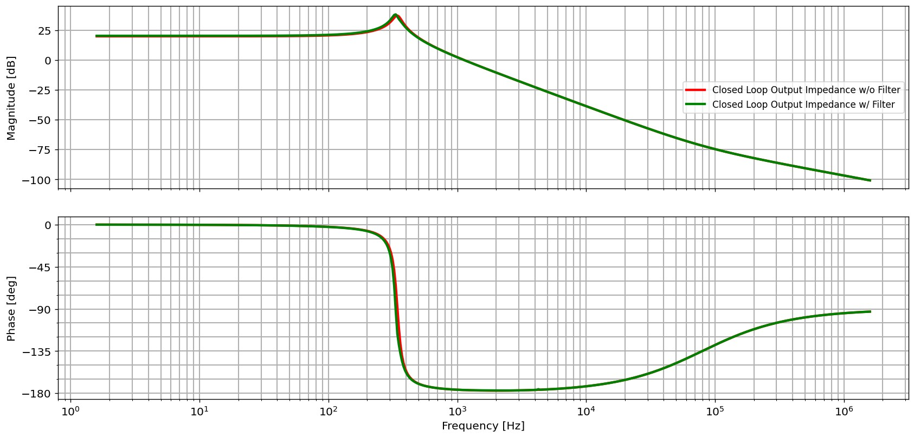
The biggest problem with the input filter design is the startup transient currents of the power supply. Figure 19 shows the transient currents in the three inductors from the open-loop simulation. The largest transient reaches above 10 A, and all transients last for a few milliseconds. These transients also occur in the closed-loop simulation. The current spikes are caused by the large components used for the filter. In addition, the efficiency dropped by nearly 2% just from the input filter alone.
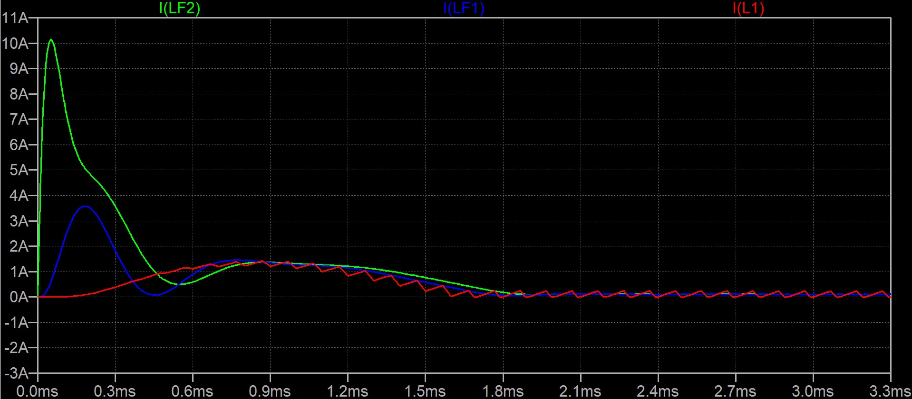
The drop in efficiency, transient currents, large components, and only moderate attenuation are all direct results of the small switching frequency. For these reasons, the input filter was excluded from the final design. Since the input power source is a battery, the EMI generated from the battery won’t get injected back into the grid, making this a reasonable design decision.
An additional analysis was included, assuming the RC input filter caused by the internal resistance of the battery and the input filter to the LDO. The internal resistance was assumed to be 1 Ω. The new loop gain plots are shown in Figure 20, and the closed-loop output impedance plots are found in Figure 21. It is interesting to note that this natural input filter reduces the resonant response and increases the phase margin by 5–10 degrees. The output impedance is significantly higher below 100 Hz, which causes less load stability at lower frequencies. Both these results are primarily caused by the internal resistance, which is hard to predict. Overall, excluding the input filter only has a slight negative impact on performance, while producing some positives in the process.
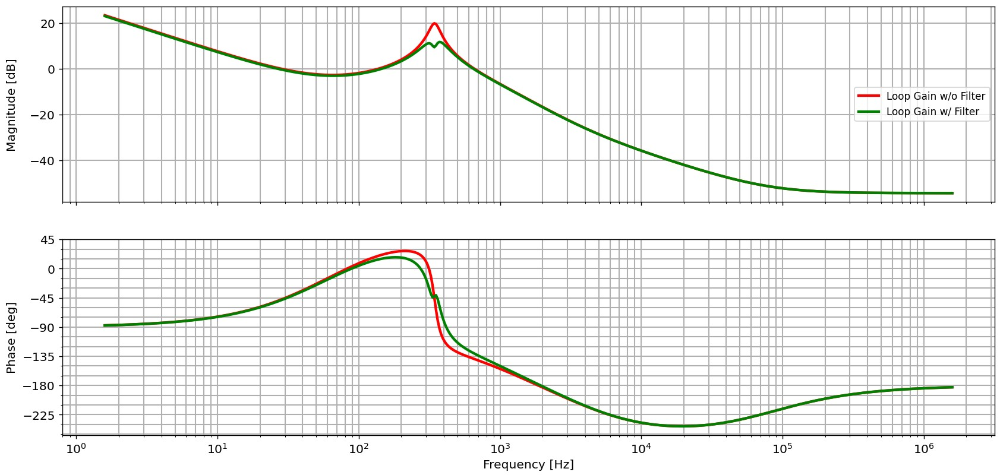
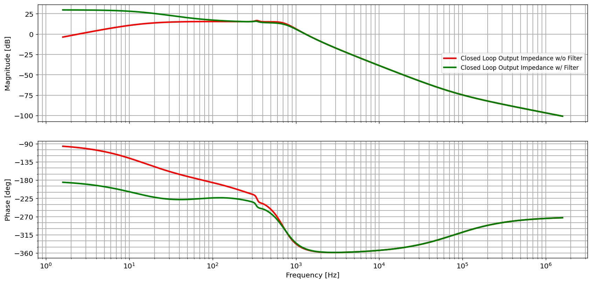
Closed-Loop Response
The full LTspice model with all three subsystems included is shown in Figure 22. The internal resistance of the battery and the input capacitance to the LDO are added to the model. Switches were modeled to accurately simulate reality. Losses from all other components not modeled are considered in a separate power supply and resistor in the model. These losses are mainly from internal resistance, IC power dissipation, and discrepancies in power dissipation from the IC models used in the simulation. The internal resistance was not included in the efficiency calculations to isolate the converter performance.
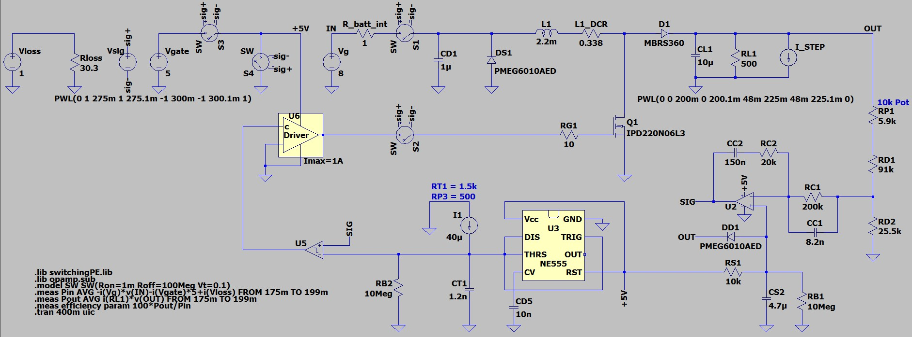
The results from the simulation are shown in Figure 23. The simulation highlights the soft start of the output voltage reference, the step responses of engaging and disengaging the second load, and the response of a quick discharge into an immediate charging cycle. Figure 24 zooms into the step responses. All overshoots and undershoots are under 6% (1.5 V). The settling time of both transients is around a few milliseconds. Lastly, the final efficiency considering all losses was calculated at 96.3% for both the light and heavy loads. These results are close to the estimate from Table 1.
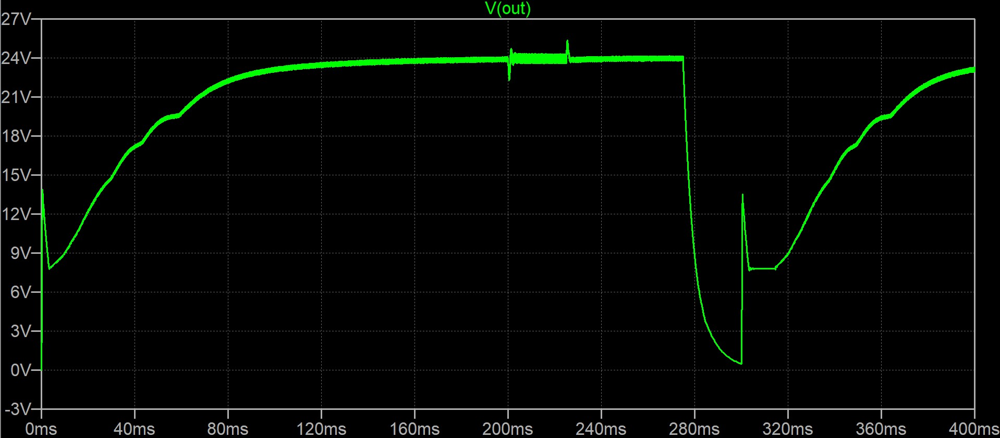
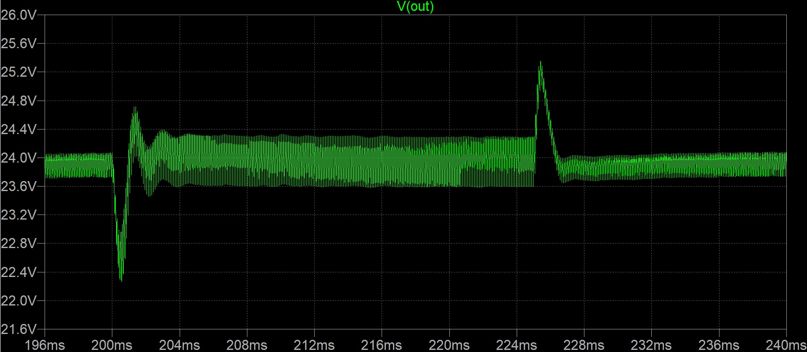
Prototyping
All subsystems were constructed using a breadboard or a prototyping board. All ICs and many other components were surface-mount devices (SMD), so an SMD to DIP (dual in-line package) adapter was used so that the devices could be mounted to the boards. The modules were tested individually and later combined to form open-loop and closed-loop tests.
Main Power Stage
An image of the power stage implemented on a prototyping board is shown in Figure 25. The photo highlights the massive inductor. This one component is the biggest downfall in terms of the space needed for the circuit board. No detailed testing was performed on this subsystem. Power was applied at the input, and a sanity check was performed with the duty cycle set to zero.
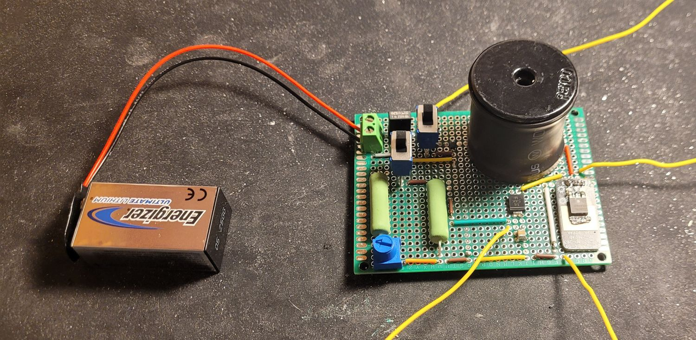
Control System and Soft Start
The control system implemented on a breadboard is shown in Figure 26. The test setup used for the control system is provided in Figure 27. The PWM generator subsystem was included so that the output of the LDO could be used to power the op-amp. The purpose of the test was to reconstruct the Bode plots of the control system to verify the compensator design. It was not practical to simulate a 24 V source with a small-signal AC waveform superimposed on it with the function generator on hand. To get around this problem, a Thevenin equivalent circuit of the input source and the voltage divider was created. The DC offset was only required to be 5 V in this case. Also, the single-supply op-amp needed to be converted to a double-supply so the output voltage could swing below 0 V.
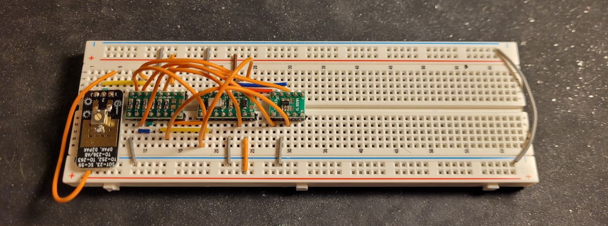
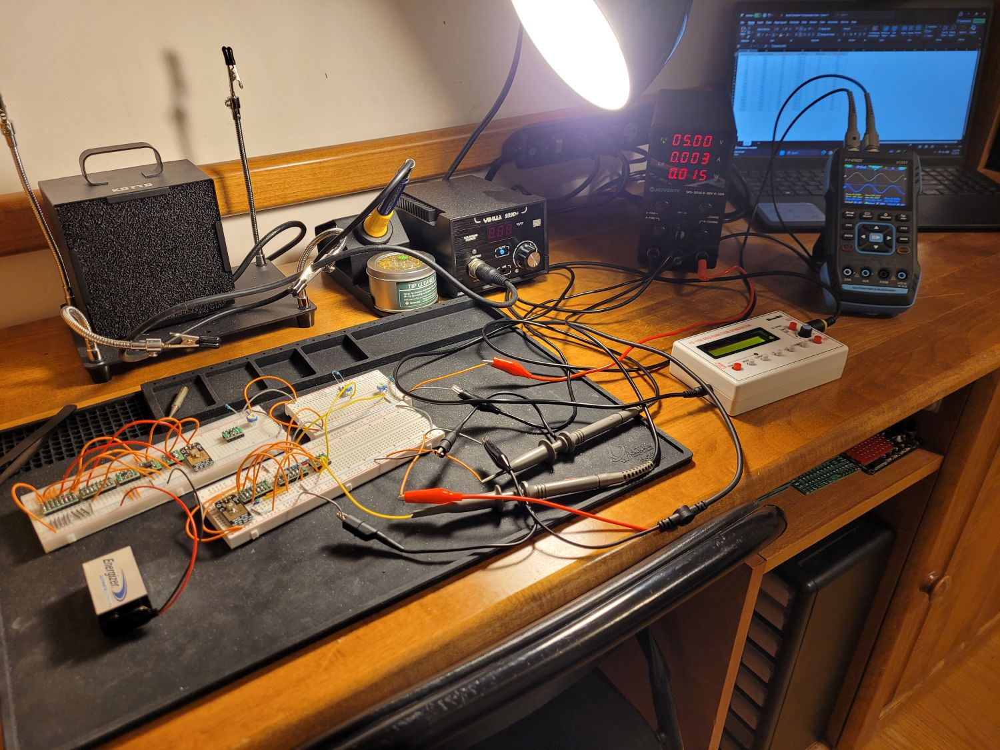
To reconstruct the transfer function, sinusoids of varying frequencies were applied at the input. The gain and phase of the output sinusoid were recorded. The data points are plotted with the original transfer function in Figure 28. The results match very well with the simulation. There are two differences from Figures 4 and 11: the gains are lower, and there is a 180-degree phase shift. The difference in gain is because the plotted data encapsulates the voltage divider and compensator transfer functions. The phase shift is caused by the inverting configuration of the op-amp, as mentioned earlier. Neither of these discrepancies affects the validity of the results.
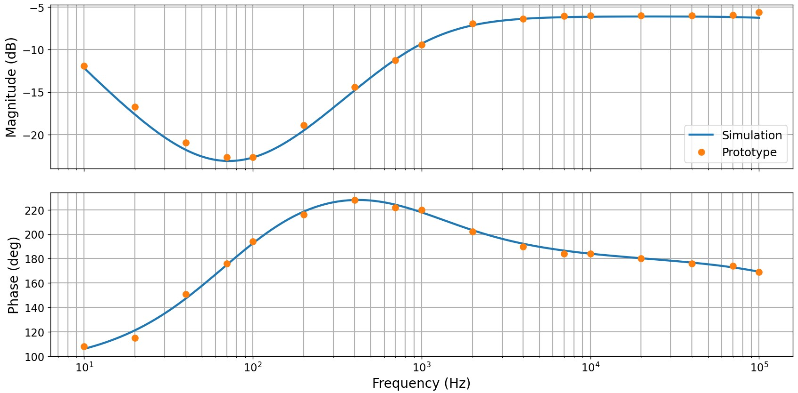
The soft start functionality was also tested. An oscilloscope screenshot of the reference response is provided in Figure 29. The rise time of the signal is about 100 ms. This time matches up well with the simulation.
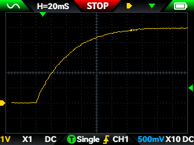
PWM Generator and Gate Drive
The PWM generator and gate drive subsystem implemented on a breadboard can be found in Figure 30. The added resistor and potentiometer located at the top right of the board were used to manually set the reference to the comparator. This setup mimics the output of the control system. The goal of this test is to verify the sawtooth waveforms along with the duty cycle at the output of the gate driver. The test setup is shown in Figure 31.
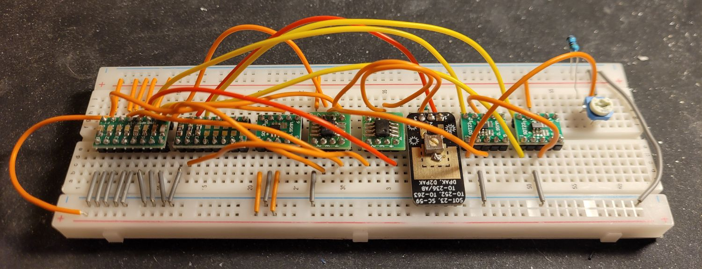
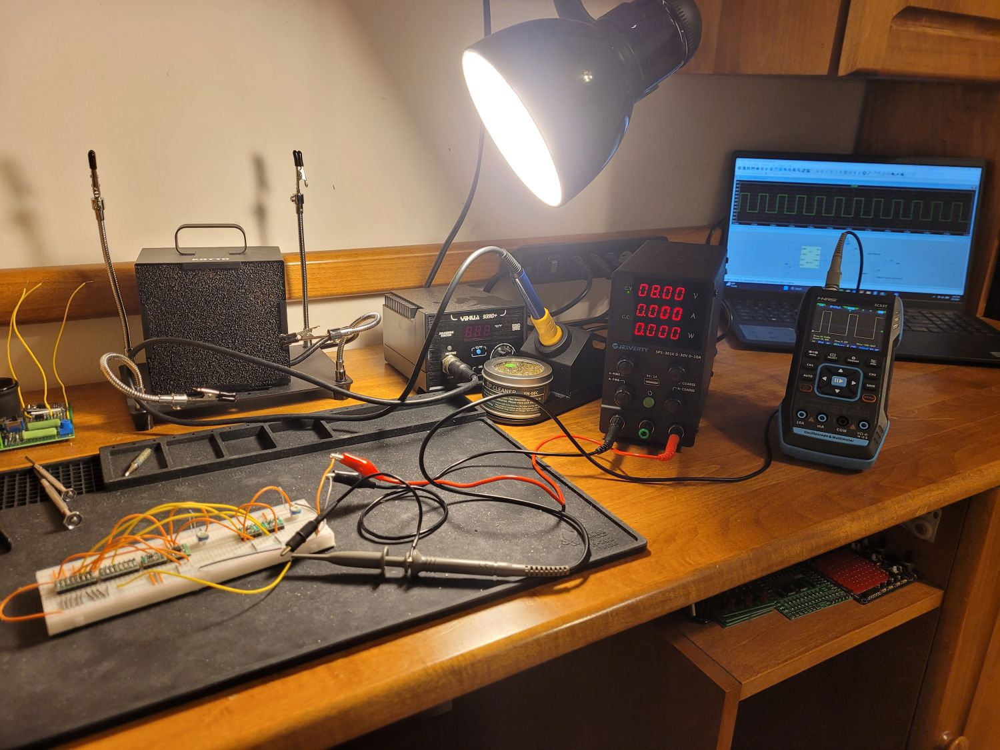
The sawtooth failed to generate properly, as shown in Figure 32. The waveform that was produced was about 1 kHz in frequency. There is a noticeable delay between cycles of the waveform. The issue was caused by the transient response of the LM334 current source. The chip could not respond quickly enough to the required transient conditions. To get around this issue, the current source was removed and replaced with a simple RC charging circuit. The waveform is shown in Figure 33. Since the waveform does not accurately mimic a sawtooth reference, the transient characteristics (loop gain) of the converter will change slightly.
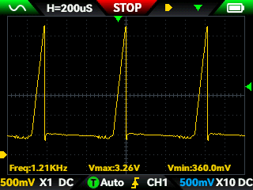
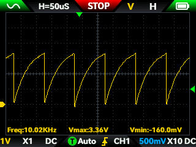
Open-Loop Response
An image of the power stage and PWM generator subsystems wired together to operate in open-loop is shown in Figure 34. The PWM generator board was modified to implement the RC reference waveform. A screenshot showing the duty cycle and output voltage is shown in Figure 35. A closeup image of the voltage ripple is shown in Figure 36. There is some noise in the screenshots due to the non-ideal layout of the boards. The peak-to-peak ripple voltage is around 0.6 V. This result is double what was predicted in simulation. The only explanation that would explain this observation is that the effective capacitance of the output capacitor reduced from 10 μF to around 5 μF due to the DC bias effect of ceramics. This reduction is investigated in more detail later.
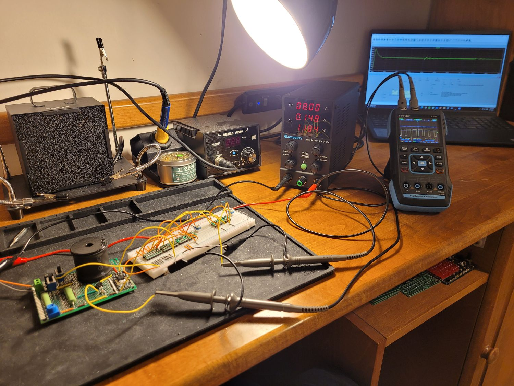
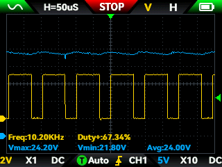
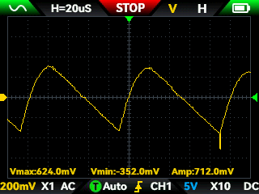
Closed-Loop Response
An image of all three systems wired to operate in closed-loop is shown in Figure 37. A DC power supply was used to estimate the power input to the system. The input power shown on the display is 1.224 W, which corresponds to an efficiency just above 94%, which is a bit lower than the simulations. More details about efficiency will be finalized later.
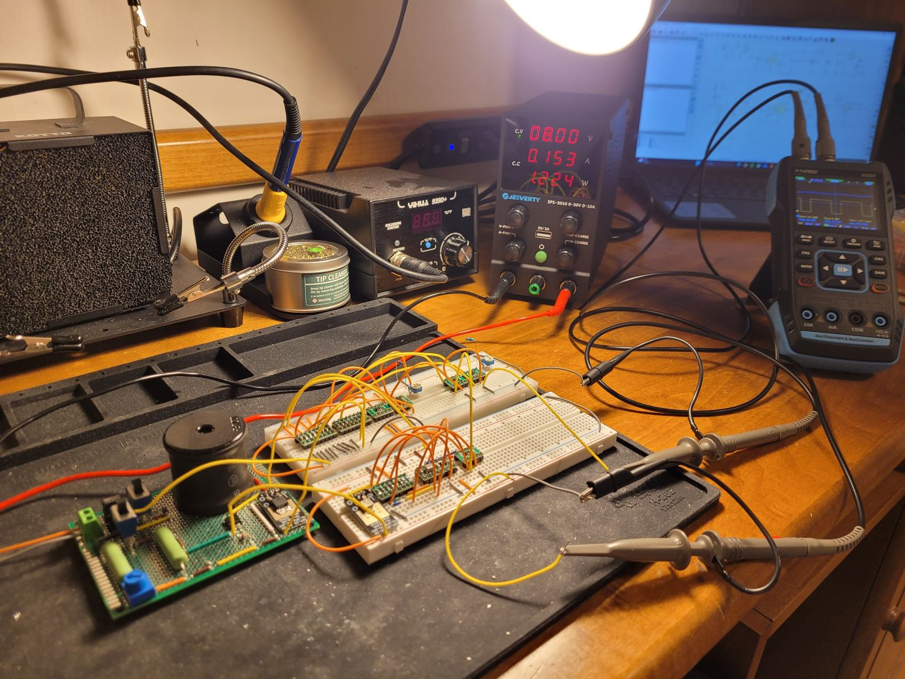
The operation of the closed-loop system performed very well with one load resistor attached. When the total load approached 2 W by engaging the second load resistor and potentiometer, severe oscillations occurred in the output voltage as seen in Figure 38. These oscillations were not present in the open-loop system, which indicates that the control system destabilizes at the higher loads. This phenomenon is consistent with the output capacitor decreasing by a factor of 2. The LTspice simulations were recreated with the capacitor changed to 5 μF and the same oscillations were present.
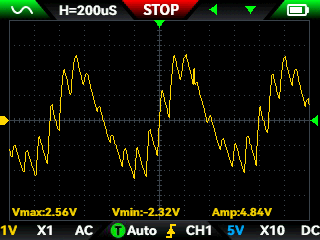
To get around the instability issue, a second 10 μF capacitor was soldered in parallel with the existing capacitor. Ideally, both these capacitors with the DC bias effect should match the originally designed capacitance. Upon more testing, the added capacitor removed all oscillations and was more consistent with the original simulations.
↑ Return to OutlineBuild
After the prototyping phase was complete, small modifications were made to the final design, and the circuit board layout was completed in KiCad. After the boards were fabricated, the final board was soldered together to form the final product.
Circuit Board Layout
The final schematic used for the design, with the modification made to the PWM generator and the second capacitor added to the output, is shown in Figure 39. The circuit board layout is shown in Figure 40. The top plane was set to ground, and the bottom plane was set to 5 V for IC power. The power traces were 1 mm thick, and all other traces were 0.2 mm. The most sensitive components were the analog ICs. These devices needed to be kept away from traces that had large changes in current and from nodes that had large changes in voltage. Large changes in current would induce voltages in the analog loops. Large changes in voltages could induce currents in the analog loops from parasitic capacitances. A rendering of the board with 3D models of all the components is shown in Figure 41.
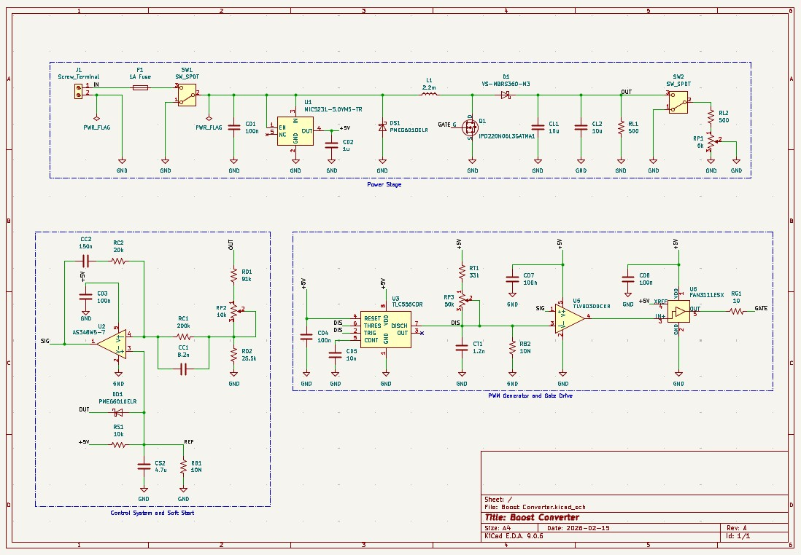
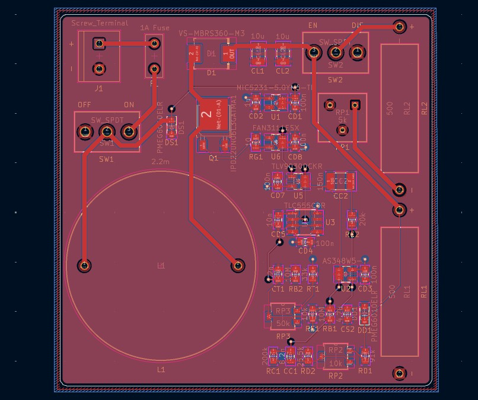
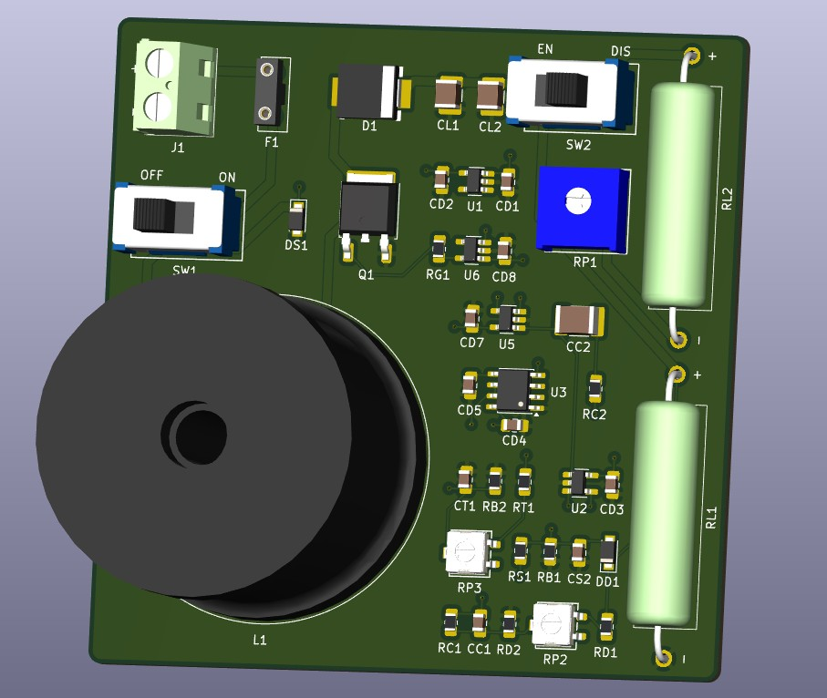
Final Testing
An image of the final device with the fabricated board and soldered components is shown in Figure 42. Many of the tests that were performed in the prototyping stage were retested to ensure there were no surprises. In addition, the step responses of engaging and disengaging the second load resistor are shown in Figures 43 and 44, respectively. These results match well with Figure 24. The waveforms also highlight the steady-state output voltage and ripple of the final design.
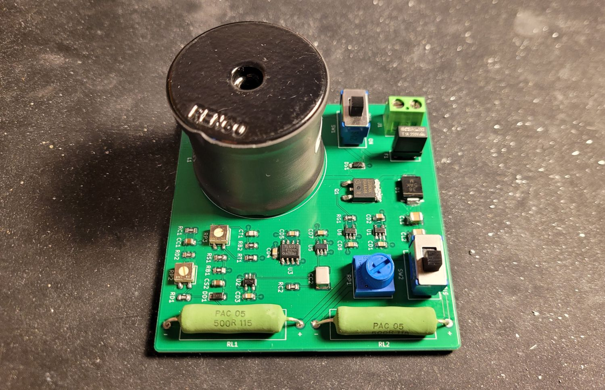
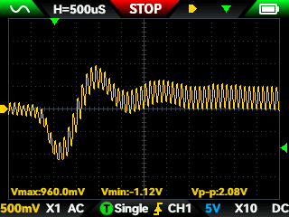
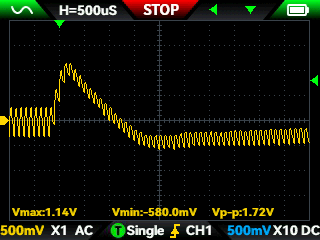
A current probe was used at the input of the device to verify the readings from the power supply display because the resolution of the current reading is only 1 mA, corresponding to nearly 1% in efficiency for the lighter load. The current waveform for the larger load is plotted in Figure 45. A current sense resistor was also used as an extra measurement. The average current from the waveforms for both the current probe and sense resistor for both load cases matches closely with the displayed values. The currents displayed from the supply tended to be slightly higher and was therefore used for all final calculations as a conservative estimate.
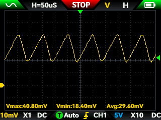
A final estimate of efficiency is desired. The power supply display was used for the input power. The average output voltage from a multimeter and the measured load resistance was used for the output power. The load resistances used in the final design were measured before installation, and temperature variances were accounted for. During testing, the power input tended to decrease when the switching frequency was increased. The switching frequency can be tuned from about 8 kHz to 25 kHz. Discrete resistors were added to see what switching frequency above 25 kHz would optimize the efficiency. The optimal switching frequency was found to be around 50 kHz. This result shows that efficiency is dominated by conduction losses, rather than switching losses. This observation is consistent with Table 1. Since the switching frequency decreasing the current ripple in various components, the losses in these devices is less.
The efficiency calculations were broken up into worst-case and best-case. The best case assumes a 50 kHz switching frequency and that all variations improve efficiency. The worst case assumes the original 10 kHz switching frequency and all variations reduce efficiency. The worst case was 92.1% for the light load and 93.9% for the heavy load. The best case was 97.2% for the light load and 96.7% for the heavy load. The final efficiency is estimated to be around 92–97%. Again, there is also some internal resistance of the battery that is not included. This resistance can easily subtract 1–3% from these values.
A summary of the converter performance parameters is given in Table 2. The ripple voltage is defined peak-to-peak for the heavy load, and the transient parameters consider both extreme load conditions. The data in the table does not represent limits; it only includes the conditions that were tested.
| Converter Topology | Boost |
| Operating Mode | CCM |
| Input Voltage | 7–10 V |
| Output Voltage | 24 V |
| Output Ripple Voltage | 0.5 V |
| Output Power | 1.2–2.3 W |
| Efficiency | 92–97% |
| Nominal Duty Cycle | 68% |
| Switching Frequency | 10 kHz |
| Transient Overshoot | 5% |
| Transient Settling Time | 3 ms |
| Phase Margin | 40–50 deg |
A demonstration of the operation of the converter is given in Video 1. The video shows the operation of turning on and off the power, as well as engaging and disengaging the second load resistor. The potentiometer is used to create other load conditions. Also shown is the operation of the switching frequency and output reference tuning potentiometers. Next, variations in the input supply voltage were shown. Lastly, some of the tests were repeated with the battery connected. A ringing noise can be heard since the switching frequency is in the audible range.